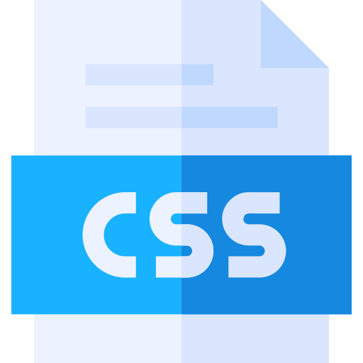

HTML (abreviação para a expressão inglesa HyperText Markup Language, que significa Linguagem de Marcação de Hipertexto) é uma linguagem de marcação utilizada na construçãoda páginas na Web

CSS
Cascading Style Sheets (CSS) é um mecanismo para adicionar estilo (cores,fontes,espaçamentos etc) a um documento web. Em vez de colocar a formatação dentro do documento, o CSS cria um link (ligação) para uma página que contém os estilos.
JavaScript
JavaScript é uma linguagem de programção interpretada. Foi originalmente implementada como parte dos navegadores web para que scripts pudessem ser executados do lado do cliente e interagissem com o usuário sem a necessidade deste script passar pelo servidor, controlando o navegador, realizando comunicação assíncrona e alterando o conteúdo do documento exibido
PHP
PHP (um acrônimo recursivo para "PHP: Hypertext Preprocessor") é uma linguagem interpretada livre, usada originalmente apenas para o desenvolvimento de aplicações presentes e atuantes no lado do servidor, capazes de gerar conteúdo dinâmico da World Wide Web